Art Through Time
A Little Journey Through Art History
Have you ever wondered where art began? Art has been part of human life for thousands of years. From ancient cave paintings to contemporary artworks, people have always found ways to express their ideas and stories.
Let's travel through time and discover how art has changed throughout history!
Start the Journeyc. 40,000-3,000 BCE
01. Prehistoric Art
Before writing systems existed, early humans created paintings on cave walls. They often used natural materials to make images of animals, human figures, and everyday life.
These paintings give us a glimpse into how early humans saw and experienced their world.
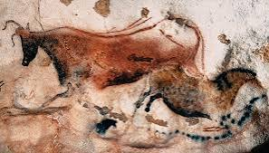
Lascaux Cave Paintings
Unknown artists
Little fact: Many prehistoric artworks were created thousands of years before written history.
c. 3,000 BCE-500 CE
02. Ancient Art
Ancient civilizations such as Egypt, Greece, and Rome developed their own artistic styles. Art appeared in temples, tombs, pottery, sculptures, and everyday objects.
Many artworks showed gods, rulers, mythology, and important events.
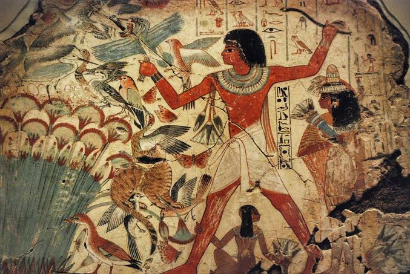
Hunting in the Marshes
Unknown artist
Little fact: Ancient Egyptian artists often used symbols and specific colors to communicate meaning in their artwork.
c. 500-1400 CE
03. Medieval Art
During the Middle Ages, much European art focused on religion. Artists created decorated manuscripts, paintings, mosaics, and beautiful stained-glass windows.
Art was often used to tell religious stories and communicate ideas to people.
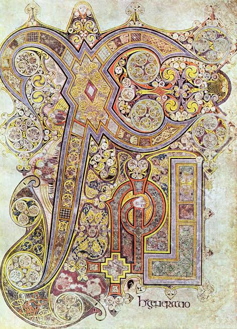
Book of Kells
Unknown artists
Little fact: Some medieval manuscripts were decorated with colorful patterns and detailed letters.
c. 1400-1600 CE
04. The Renaissance
The Renaissance was a period of renewed interest in classical Greek and Roman ideas. Artists explored realism, perspective, human anatomy, and the beauty of nature.
Paintings became more lifelike, with greater attention to light, depth, and human expressions.
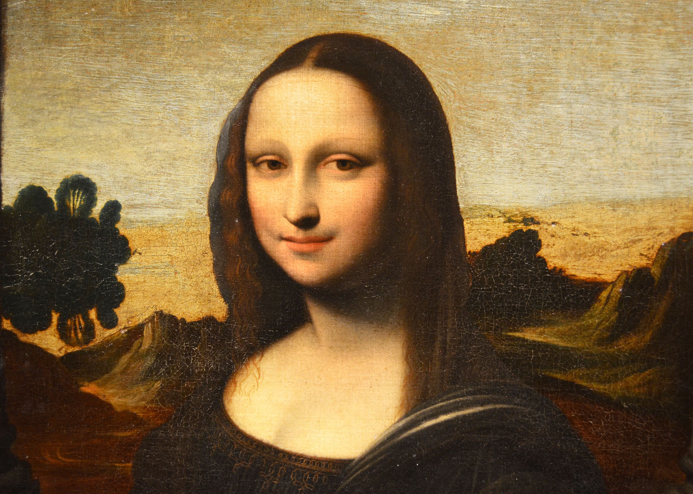
Mona Lisa
Leonardo da Vinci
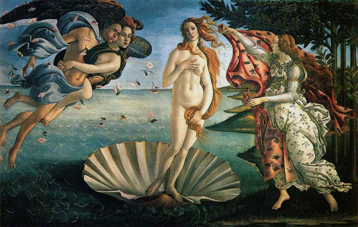
The Birth of Venus
Sandro Botticelli
Famous artists: Leonardo da Vinci, Michelangelo, and Raphael.
c. 1600-1750 CE
05. The Baroque Period
Baroque art became known for its dramatic scenes, strong emotions, movement, and contrast between light and shadow. Artists wanted their paintings to feel powerful and expressive.
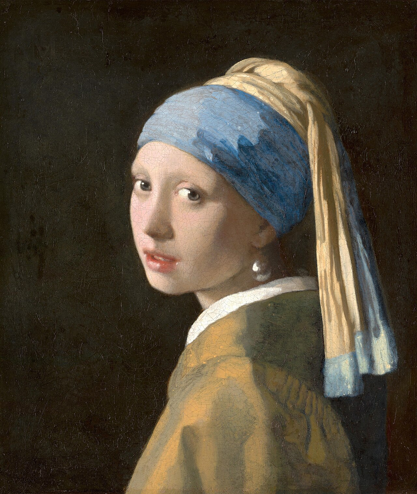
Girl with a Pearl Earring
Johannes Vermeer
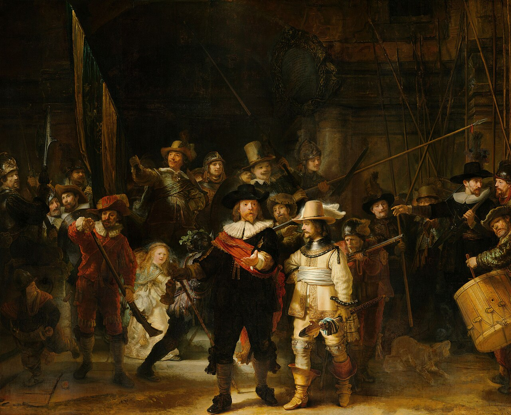
The Night Watch
Rembrandt van Rijn
Little fact: Baroque artists often used dramatic lighting to make important parts of a painting stand out.
c. 1860-1890 CE
06. Impressionism
Impressionist artists wanted to capture the feeling of a moment. They focused on natural light, changing colors, and everyday scenes using visible brushstrokes.
Instead of carefully painting every detail, they often focused on the overall impression of a scene.
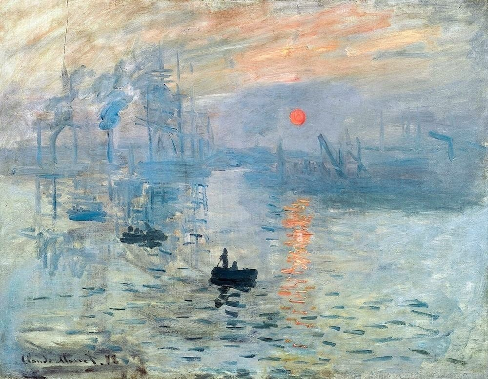
Impression, Sunrise
Claude Monet
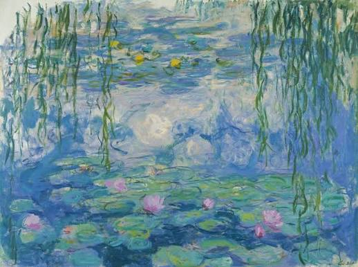
Water Lilies
Claude Monet
Famous artists: Claude Monet, Pierre-Auguste Renoir, and Edgar Degas.
c. 1860s-1970s
07. Modern Art
Modern art introduced new ways of thinking about creativity. Artists experimented with abstraction, unusual shapes, bold colors, and different ways of representing the world.
Art no longer had to look realistic. Artists could express ideas through shapes, colors, and imagination.
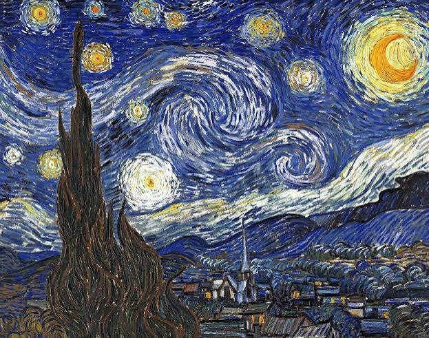
The Starry Night
Vincent van Gogh
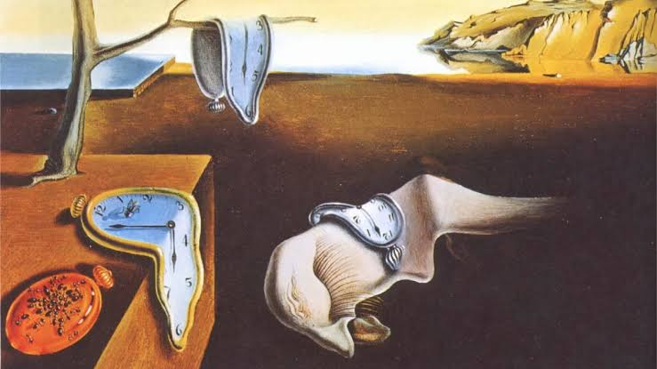
The Persistence of Memory
Salvador Dalí
Famous artists: Vincent van Gogh, Pablo Picasso, and Salvador Dalí.
c. 1970s-Present
08. Contemporary Art
Contemporary art is the art of our time. Artists use many different materials, techniques, and technologies to explore personal experiences and ideas about the world around them.
It can include painting, photography, digital art, installations, and many other creative forms.
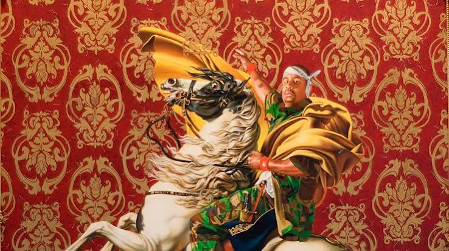
Napoleon Leading the Army over the Alps
Kehinde Wiley
What makes it special? Contemporary artists continue to explore new ideas and creative possibilities.
Art Keeps Evolving!
From the earliest cave paintings to today's creative experiments, art has always been a part of human expression. Every period has its own stories, techniques, and ideas.
And the best part? Art history is still being written. Maybe one day, your own artwork will become part of it!
Explore Your Creativity